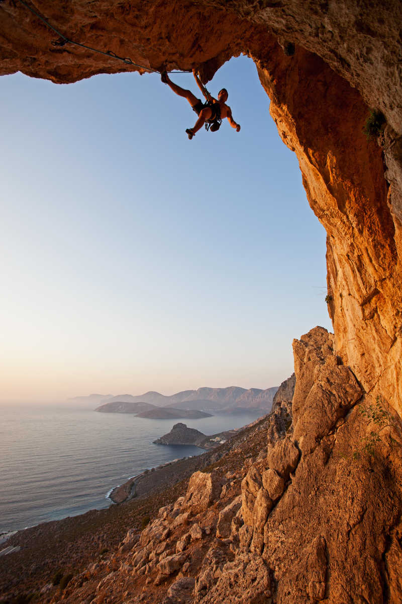

Designing for real climbing mindsets
CRAG is shaped around two users: a beginner who wants confidence and guidance, and a committed climber who wants structure, progress, and better social coordination.

Alex Charlie
Primary Persona - Beginner Indoor Climber
Profile
- 21 years old, university student
- Climbs 1-2 times each week
- Mostly indoor bouldering
Goals
- Feel less intimidated at the gym
- Understand how to approach routes
- See progress after each session
Frustrations
- Does not know where to start
- Feels awkward asking stronger climbers for help
- Cannot tell whether he is improving
Behavior
- Watches short climbing clips for hints
- Takes route photos to remember attempts
- Prefers quick visual guidance over jargon
Design Implication
For Alex, the system should reduce pressure, use simple language, reward effort, and provide low-friction ways to get help without making him feel inexperienced.

Liam Carter
Secondary Persona - Outdoor Climbing Enthusiast
Profile
- 30 years old, outdoor enthusiast
- 6+ years climbing experience
- Focuses on outdoor sport and trad climbing
Goals
- Project challenging outdoor routes
- Explore new climbing areas
- Climb safely with reliable partners
Frustrations
- Unclear or outdated route conditions
- Weather uncertainty affecting plans
- Difficulty finding experienced partners
Behavior
- Plans trips around weather and location
- Checks forums and climbing apps before trips
- Shares beta and route info with community
Design Insight
Liam needs reliable route information, weather-aware planning, and easy coordination with trusted climbing partners for outdoor trips.